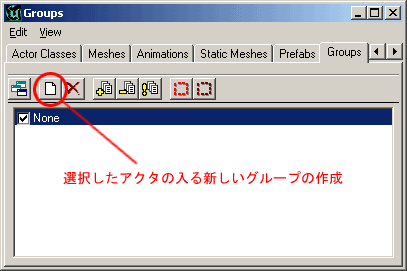
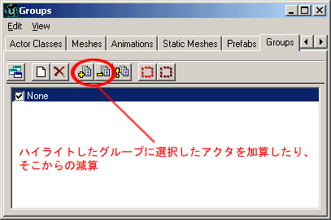
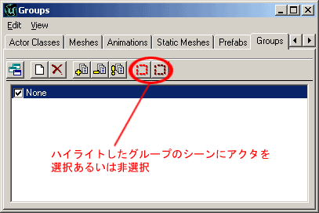

UDN
Search public documentation:
GroupsBrowserJP
English Translation
한국어
Interested in the Unreal Engine?
Visit the Unreal Technology site.
Looking for jobs and company info?
Check out the Epic games site.
Questions about support via UDN?
Contact the UDN Staff
한국어
Interested in the Unreal Engine?
Visit the Unreal Technology site.
Looking for jobs and company info?
Check out the Epic games site.
Questions about support via UDN?
Contact the UDN Staff
Groups Browser (グループ ブラウザ）
本書の概要：管理レベルにおいてのグループブラウザを使ってのガイドとリファレンス 本書の変更記録：作成目的で、Jason Lentz (DemiurgeStudios?)によって最後に更新。原著者は、Jason Lentz (DemiurgeStudios?)。はじめに
グループブラウザは見落とされがちですが、大変便利なツールです。本書においてその機能の有効な使い方と、それを使ってのあなたのレベルの管理の仕方を紹介します。新しいグループの作成
レベルに追加したものは何であれ、初め、1つのグループに入れられます。新しくグループを作るときは、まず、グループに入れる、1つないし複数のアクタを選択します。次に、グループブラウザのトップに有る [New Group] ボタンをクリックしてください。
そうすると、ウィンドウが開いて、グループに名前をつけることができます。このグループ内のアクタは2つのグループに入ることになります。今作成したグループと、もともと所属していた"None"という名のグループです。グループへの Add （加算）とそこからの Subtract （減算）
グループへのアクタの追加は簡単です。単に、グループに入れたい1つないし複数のアクタを選択してください。そして、グループブラウザを開いて、[Add] （プラス）ボタンを押してください。逆に、同じ方法で、[Remove] （マイナス）ボタンを押してアクタを削除することもできます。
複数のグループを Ctrl キーを押したままでクリックしたり、Shift キーを押したままでクリックして選択することもできます。アクタはお好きなだけの数のグループに所属することができます。この事は違ったアクタのセットがオーバーラップのあるグループに入っているときに便利です。例えば、すべてをゾーンに割り当てて、そのグループが、そのレベル内のすべてのドアによって構成されているように、まとめることもできます。 アクタを複製したときに、新しいアクタは親アクタの所属するグループに残ります。このため、アクタを作成した左記からグループに割り当てていくと、グループブラウザでの管理がしやすくなります。グループの編成と使用法
グループには2つの大変便利な機能があります。アクタを隠すことと選択することです。 グループを使って、そのとき扱っているアクタとジオメトリだけを残す形で、シーンをすっきりさせることができます。例えば、いくつもの階があり、しかもいくつものモジュールによって構成している、ビルを扱っているとします。まず、それぞれの階をそれぞれのグループに割り当てて、そのときごとに扱っている階を残して、後の階を隠してしまうことができます。こうすると、トップのビューがとても扱いやすくなります。 グループの別の便利な機能は、特定のグループに所属するアクタを選択できることです。例えば複数の木がある平原でそのときは静的メッシュの1つの木のタイプしか登録していないとします。しかし最終的には、3つのタイプの木があるようにしたいとします。まず、他の木をいくつかのグループに割り当てた後で、1本の木をいくつも複製することができます。そして後から他の木が割り当てられたグループを、グループの名前をクリックして選択して、[Select Actors]（アクタ選択） ボタン（下に記載）を押して、そのグループに所属する木のプロパティをまとめて変えてしまうことができます。
大きなレベルを構築しているとき、グループ機能を幅広く使うほど、作業が楽になります。そして、はじめからグループを使うほうが、後でレベルの構築がかなり進んだ段階で取り入れるより、ずっと楽であるということを覚えておいてください。